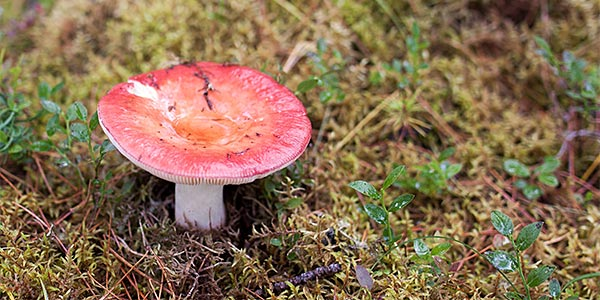

Элемент img
Элемент <img> внедряет изображение в документ в месте, где он расположен.
У него нет содержимого: он заменяется на изображение из атрибута src.
img (PNG), добавлены loading и decoding.Альтернативный текст (alt)
Атрибут alt задаёт краткое описание изображения. Он отображается, если изображение не загрузилось
или отключён показ изображений, и используется скринридерами.

alt.
Размеры изображения (width, height)
Атрибуты width и height задают размер области изображения.
Если задан только один размер — второй вычисляется по пропорциям картинки.

width="250", высота рассчитывается автоматически.
height="120", ширина рассчитывается автоматически.
Ниже показана «область», заданная одновременно по ширине и высоте. Чтобы изображение аккуратно «вписалось»
в область без искажений, применён CSS object-fit: contain.
width и height, изображение вписано в область.Гибкие изображения (srcset, sizes)
Для responsive‑изображений используют srcset (набор файлов разных размеров) и sizes
(какую ширину будет занимать изображение в разных макетах).

srcset (600w и 1200w) + sizes.
На узких экранах картинка занимает всю ширину (100vw), на широких — до 600px.
Подпись к изображению (figure, figcaption)
Для группирования изображения и подписи используется figure, а текст подписи размещают в
figcaption (первым или последним элементом внутри figure).

figure с подписью figcaption.Элемент picture
<picture> позволяет выбрать оптимальный файл изображения в зависимости от условий (например, ширины экрана).
Браузер проверяет <source> по порядку и выбирает первый подходящий; иначе берёт src у img.

picture: на широком экране подставляется landscape,
на узком — portrait, иначе используется fallback (img src=...).